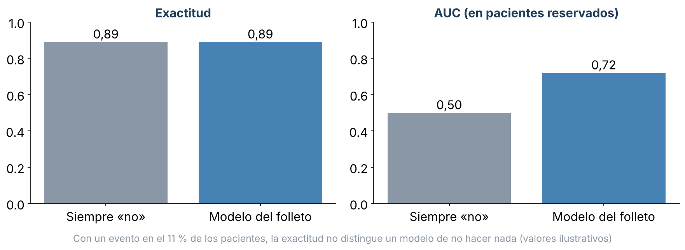
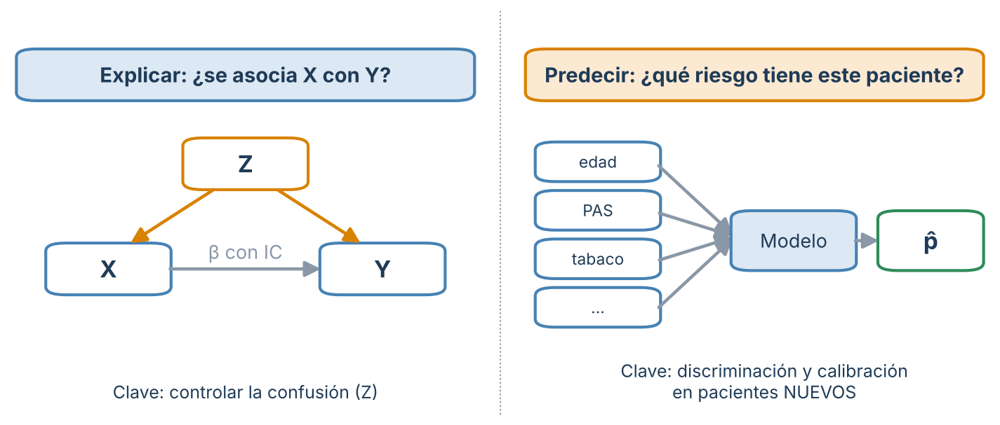
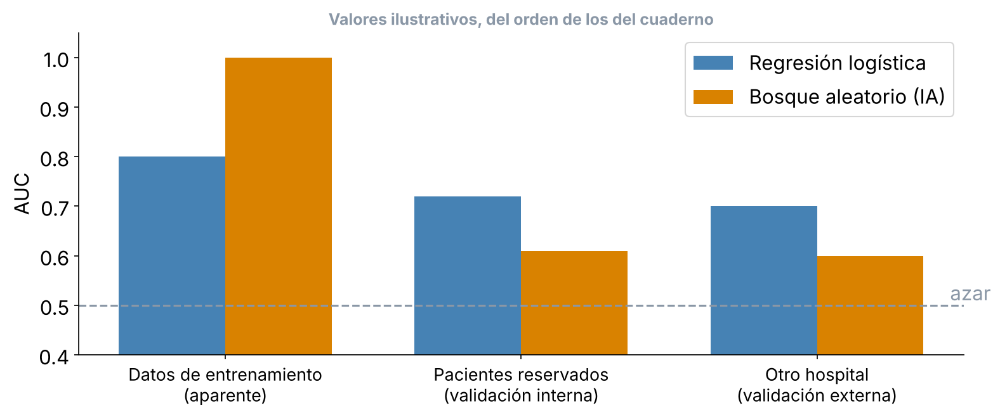
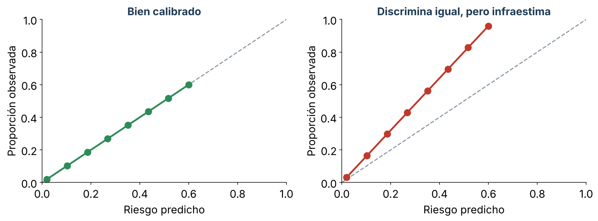
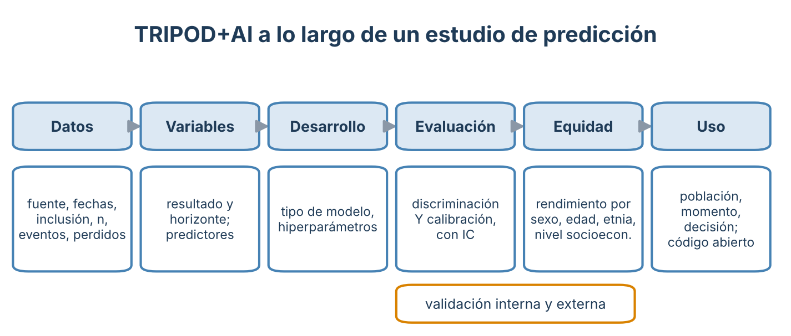
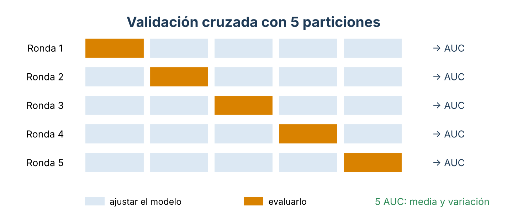

Bioestadística (1964) · Grado en Medicina · Curso 2027-2028
Tema 290Modelos predictivos e inteligencia artificial en la práctica clínica: desarrollo, validación y comunicación
Módulo 5. Generalización de conclusiones
Evaluación: el examen del Módulo 5 se hace con Colab. Practica ejecutando e interpretando cada análisis.
Fernando Borrás Rocher · Universidad Miguel Hernández de Elche · CC BY 4.0
Objetivos de aprendizaje
Al terminar esta sesión serás capaz de:
- Distinguir un modelo explicativo (Temas 270 y 280) de un modelo predictivo.
- Separar los datos de desarrollo y de validación, y explicar por qué el rendimiento aparente es optimista.
- Evaluar un modelo por su discriminación (AUC) y su calibración (gráfico de calibración, puntuación de Brier).
- Reconocer el deterioro de un modelo al aplicarlo en otra población (validación externa) y comprobar su rendimiento por subgrupos.
- Usar la declaración TRIPOD+AI para comunicar y valorar críticamente un modelo predictivo, sea estadístico o de aprendizaje automático.
Cómo usar esta presentación
Usa el selector de arriba para dar el tema en una sesión completa o en dos sesiones intercaladas.
🎓 Sesión de clase magistral
- 1. Caso clínico de partida 5 min
- 2. Conceptos clave 10 min
- 5. Autoevaluación 5 min
Explica los conceptos, haz la pausa activa y cierra con las ideas clave.
💻 Sesión de Colab
- 3. Demostración: desarrollar y validar un modelo 20 min
- 4. Práctica en la app Bioestadística 10 min
- 5. Autoevaluación 5 min
Cada estudiante abre su copia del cuaderno, predice el resultado y después ejecuta la celda.
Teclas: ← → para pasar · N notas del profesor · M cambiar de modo · F pantalla completa · Esc índice.
1. Caso clínico de partida
«Exactitud del 89 %»: ¿impresiona?

- Si el evento ocurre en el 11 %, decir siempre «no habrá evento» acierta el 89 %.
- Hay que preguntar por la discriminación, la calibración y con qué pacientes se midieron.
2. Conceptos clave
2.1 Explicar o predecir

| Modelo explicativo | Modelo predictivo | |
|---|---|---|
| Pregunta | ¿Se asocia X con Y, ajustando por confusores? | ¿Qué probabilidad de Y tiene este paciente? |
| Lo importante | Coeficientes sin sesgo, con su IC | Que las predicciones sean buenas en pacientes nuevos |
| Se evalúa con | Diseño, control de la confusión | Discriminación y calibración en datos de validación |
| Ejemplos | ¿La diabetes aumenta el riesgo? | SCORE2, qSOFA, un sistema de IA de triaje |
Un modelo predictivo no necesita que sus variables sean causas: basta con que predigan. Por eso no se deben interpretar sus coeficientes como efectos.
2. Conceptos clave
2.2 Rendimiento aparente y validación
El rendimiento aparente es optimista

- Un modelo evaluado con sus propios datos de entrenamiento se ha adaptado también a su ruido.
- Lo que cuenta es el rendimiento en pacientes reservados y, mejor aún, de otro centro.
2. Conceptos clave
2.3 Discriminación y calibración
Discriminar no es estar bien calibrado

- Discriminación: ordenar bien a los pacientes por su riesgo (AUC).
- Calibración: que un 20 % predicho sea un 20 % observado. Sin ella, el riesgo absoluto engaña.
2. Conceptos clave
2.4 TRIPOD+AI

La declaración TRIPOD+AI (BMJ, 2024) es la guía internacional para comunicar estudios de modelos predictivos, tanto de regresión como de aprendizaje automático. Algunos de sus apartados:
| Apartado | Qué debe constar |
|---|---|
| Fuente de datos | Origen, fechas, criterios de inclusión |
| Resultado | Definición del evento y horizonte temporal |
| Predictores | Definición y momento de medida |
| Tamaño muestral | Cómo se justificó; número de eventos |
| Datos perdidos | Cuántos y cómo se trataron |
| Desarrollo | Tipo de modelo, ajuste de hiperparámetros |
| Evaluación | Discriminación y calibración, con IC, en validación interna y externa |
| Equidad | Rendimiento en subgrupos (sexo, edad, etnia, nivel socioeconómico) |
| Uso previsto | Población, momento de la atención y decisión que apoya |
| Disponibilidad | Código y modelo accesibles |
Pausa activa
Piensa 30 segundos, comenta con quien tienes al lado y vota.
Un modelo tiene un AUC de 0,97 en los datos de entrenamiento y de 0,71 en pacientes reservados. ¿Qué ocurre?
En la sesión de Colab
Lo que acabas de ver se comprueba con datos en el cuaderno del Tema 290.
- Abre el cuaderno y guarda tu copia: Archivo → Guardar una copia en Drive.
- Ejecuta la celda de configuración.
- Ve a la demostración y predice cada resultado antes de ejecutar.
3. Demostración: desarrollar y validar un modelo
3.1 Los datos: un hospital de desarrollo y uno externo
▶ En tu cuaderno: 3.1 Los datos: un hospital de desarrollo y uno externo. Antes de ejecutar, escribe qué esperas obtener.
Simulamos dos grupos de pacientes. El primero es un registro de 600 pacientes del hospital donde se desarrolla el modelo. Tiene 6 predictores reales y 10 variables sin relación con el evento. El segundo son 2.000 pacientes de otro hospital. Su población es mayor y más hipertensa. Además, tiene más riesgo por factores que el modelo no incluye (por ejemplo, más dislipemia familiar o peor acceso a la atención primaria).
import numpy as np
import pandas as pd
import matplotlib.pyplot as plt
from sklearn.linear_model import LogisticRegression
from sklearn.ensemble import RandomForestClassifier
from sklearn.model_selection import train_test_split, cross_val_score
from sklearn.metrics import roc_auc_score, brier_score_loss
from sklearn.calibration import calibration_curve
rng = np.random.default_rng(seed=290)
PREDICTORES = ["edad", "mujer", "fumador", "diabetes", "pas", "hdl"] + [f"ruido_{i}" for i in range(10)]
def generar(n, edad_media=60, pas_extra=0, riesgo_no_medido=0.0):
d = pd.DataFrame({
"edad": rng.normal(edad_media, 10, n).clip(40, 90),
"mujer": rng.random(n) < 0.5,
"fumador": rng.random(n) < 0.25,
"diabetes": rng.random(n) < 0.18,
})
d["pas"] = 105 + 0.5 * d["edad"] + pas_extra + rng.normal(0, 14, n)
d["hdl"] = 48 + 9 * d["mujer"] + rng.normal(0, 11, n)
for i in range(10):
d[f"ruido_{i}"] = rng.normal(0, 1, n)
logit = (-7.5 + riesgo_no_medido + 0.075 * d["edad"] - 0.5 * d["mujer"] + 0.6 * d["fumador"] + 0.7 * d["diabetes"]
+ 0.02 * (d["pas"] - 120) - 0.02 * (d["hdl"] - 50))
d["evento"] = (rng.random(n) < 1 / (1 + np.exp(-logit))).astype(int)
return d.astype(float)
desarrollo = generar(600)
externo = generar(2000, edad_media=68, pas_extra=8, riesgo_no_medido=0.5)
print(f"Desarrollo: {len(desarrollo)} pacientes, {desarrollo['evento'].mean():.1%} con evento")
print(f"Externo: {len(externo)} pacientes, {externo['evento'].mean():.1%} con evento")3. Demostración: desarrollar y validar un modelo
3.2 La exactitud engaña
▶ En tu cuaderno: 3.2 La exactitud engaña. Antes de ejecutar, escribe qué esperas obtener.
y = desarrollo["evento"]
print(f"«Modelo» que siempre dice «sin evento»: exactitud {(y == 0).mean():.1%}, AUC 0,50")3. Demostración: desarrollar y validar un modelo
3.3 Rendimiento aparente frente a validación interna
▶ En tu cuaderno: 3.3 Rendimiento aparente frente a validación interna. Antes de ejecutar, escribe qué esperas obtener.
entreno, prueba = train_test_split(desarrollo, test_size=0.3, random_state=290, stratify=desarrollo["evento"])
modelos = {
"Regresión logística": LogisticRegression(max_iter=1000),
"Bosque aleatorio": RandomForestClassifier(n_estimators=300, min_samples_leaf=1, random_state=290),
}
for nombre, modelo in modelos.items():
modelo.fit(entreno[PREDICTORES], entreno["evento"])
auc_aparente = roc_auc_score(entreno["evento"], modelo.predict_proba(entreno[PREDICTORES])[:, 1])
auc_prueba = roc_auc_score(prueba["evento"], modelo.predict_proba(prueba[PREDICTORES])[:, 1])
print(f"{nombre:>20}: AUC aparente {auc_aparente:.3f} · AUC en pacientes reservados {auc_prueba:.3f}")El bosque aleatorio, un algoritmo de aprendizaje automático muy flexible, memoriza a los pacientes de entrenamiento: su AUC aparente es casi perfecto. En pacientes nuevos rinde como la regresión logística, o peor. Con datos tabulares y pocas variables clínicas, los algoritmos complejos rara vez superan a una regresión logística bien especificada (Christodoulou et al., 2019). Por eso el AUC del folleto, sin decir con qué pacientes se midió, no vale nada.
3. Demostración: desarrollar y validar un modelo
3.4 Validación cruzada
▶ En tu cuaderno: 3.4 Validación cruzada. Antes de ejecutar, escribe qué esperas obtener.

logistica = LogisticRegression(max_iter=1000)
auc_cv = cross_val_score(logistica, desarrollo[PREDICTORES], desarrollo["evento"], cv=5, scoring="roc_auc")
print("AUC en cada una de las 5 particiones:", auc_cv.round(3))
print(f"AUC medio por validación cruzada: {auc_cv.mean():.3f}")La validación cruzada divide los datos en 5 partes, entrena con 4 y evalúa con la quinta, rotando. Aprovecha todos los datos y muestra cuánto varía el rendimiento de una partición a otra. Con 600 pacientes y unos 60 eventos, el AUC va de menos de 0,60 a más de 0,80 según la partición. La estimación es imprecisa.
3. Demostración: desarrollar y validar un modelo
3.5 Validación externa: discriminación y calibración
▶ En tu cuaderno: 3.5 Validación externa: discriminación y calibración. Antes de ejecutar, escribe qué esperas obtener.
final = modelos["Regresión logística"] # el modelo desarrollado con los datos de entrenamiento
for nombre, datos in [("Desarrollo (reservados)", prueba), ("Hospital externo", externo)]:
p = final.predict_proba(datos[PREDICTORES])[:, 1]
print(f"{nombre:>24}: AUC {roc_auc_score(datos['evento'], p):.3f} · Brier {brier_score_loss(datos['evento'], p):.3f} · "
f"eventos esperados {p.sum():.0f} · observados {datos['evento'].sum():.0f} (O/E = {datos['evento'].sum() / p.sum():.2f})")p_ext = final.predict_proba(externo[PREDICTORES])[:, 1]
observado, predicho = calibration_curve(externo["evento"], p_ext, n_bins=8, strategy="quantile")
plt.figure(figsize=(5.5, 5.5))
plt.plot([0, 0.6], [0, 0.6], color="gray", linestyle="--", label="Calibración perfecta")
plt.plot(predicho, observado, marker="o", label="Modelo en el hospital externo")
plt.xlabel("Probabilidad predicha")
plt.ylabel("Proporción observada de eventos")
plt.title("Gráfico de calibración")
plt.legend()
plt.show()En el hospital externo:
- La discriminación se mantiene parecida (AUC alrededor de 0,70): el modelo sigue ordenando a los pacientes por su riesgo.
- La calibración empeora: ocurren unos 480 eventos donde el modelo esperaba unos 420 (O/E = 1,15). En los riesgos altos, los puntos del gráfico quedan por encima de la diagonal. El modelo infraestima el riesgo de esta población, porque no incluye factores que aquí son más frecuentes. Usado sin ajustar, dejaría sin tratar a pacientes de alto riesgo.
La solución habitual es recalibrar el modelo con datos locales antes de usarlo. Es lo que se hizo con SCORE2, que tiene versiones distintas para regiones europeas de riesgo bajo, moderado, alto y muy alto.
3. Demostración: desarrollar y validar un modelo
3.6 Equidad: rendimiento por subgrupos
▶ En tu cuaderno: 3.6 Equidad: rendimiento por subgrupos. Antes de ejecutar, escribe qué esperas obtener.
externo["p"] = p_ext
for nombre, grupo in [("Hombres", externo[externo["mujer"] == 0]), ("Mujeres", externo[externo["mujer"] == 1])]:
print(f"{nombre}: n = {len(grupo)} · eventos {grupo['evento'].sum():.0f} · AUC {roc_auc_score(grupo['evento'], grupo['p']):.3f} · "
f"O/E {grupo['evento'].sum() / grupo['p'].sum():.2f}")En conjunto, el error de calibración parecía moderado (O/E = 1,15). Pero por sexos es muy distinto. El modelo infraestima el riesgo de los hombres (O/E ≈ 1,5) y sobrestima el de las mujeres (O/E ≈ 0,85). Los errores se compensaban en el total. TRIPOD+AI pide dar el rendimiento por subgrupos. Un modelo puede funcionar bien en conjunto y mal en un grupo con poca representación en los datos de desarrollo. Así puede reproducir o ampliar desigualdades en la atención.
Ampliación
Ampliación: comunicar el riesgo al paciente
paciente = pd.DataFrame([{**{v: 0.0 for v in PREDICTORES}, "edad": 66, "mujer": 0, "fumador": 1, "diabetes": 0,
"pas": 150, "hdl": 42}])
riesgo = final.predict_proba(paciente[PREDICTORES])[0, 1]
print(f"Riesgo estimado a 5 años: {riesgo:.0%}")
print(f"De cada 100 personas como usted, unas {riesgo * 100:.0f} tendrán un evento cardiovascular en 5 años "
f"y unas {100 - riesgo * 100:.0f} no.")Las frecuencias naturales («de cada 100 personas como usted…») se entienden mejor que los porcentajes y mucho mejor que las odds (Tema 150).
Ampliación
Ampliación: errores frecuentes
Dar el rendimiento aparente como si fuera el rendimiento real.
Usar los datos de validación para elegir el modelo y después presentarlos como prueba independiente.
Evaluar solo la discriminación, sin la calibración.
Usar la exactitud con eventos poco frecuentes.
Aplicar un modelo en otra población sin validarlo ni recalibrarlo.
Interpretar las variables de un modelo predictivo como causas.
Creer que un algoritmo de IA es mejor por ser más complejo.
4. Práctica en la app Bioestadística
Abre la unidad 290 de la app Bioestadística y completa sus misiones:
- Misión básica (sin asistente): clasificar diez afirmaciones de folletos y resúmenes de modelos de IA como discriminación, calibración, rendimiento aparente o validado.
- Misión clínica (con pistas): desarrollar un modelo con la cohorte cardiovascular y validarlo con una partición reservada. Presentar su AUC y su gráfico de calibración.
- Misión reto (con asistente): evaluar con la lista TRIPOD+AI el resumen de un artículo sobre un modelo de IA. Redactar las cinco preguntas que harías a la empresa del caso.
Al terminar, exporta el informe de la unidad.
5. Autoevaluación
Responde sin asistente.
5. Autoevaluación
Elige una opción: verás la explicación.
Un modelo tiene un AUC de 0,97 en los datos de entrenamiento y de 0,71 en pacientes reservados. ¿Qué ocurre?
Un modelo discrimina bien en otro hospital (AUC 0,80) pero predice 50 eventos donde ocurren 100. ¿Qué le pasa?
El evento ocurre en el 5 % de los pacientes y un modelo tiene una exactitud del 95 %. ¿Qué concluyes?
¿Qué aporta la validación externa que no aporta la interna?
Según TRIPOD+AI, ¿qué debe comunicarse sobre el rendimiento de un modelo?
Ideas clave
- Un modelo predictivo se juzga por cómo predice en pacientes que no ha visto.
- El rendimiento aparente es optimista; los datos de validación se reservan hasta el final.
- Hay que evaluar la discriminación (AUC) y la calibración; la exactitud engaña con eventos poco frecuentes.
- Al cambiar de población, la calibración suele empeorar: valida externamente y recalibra.
- TRIPOD+AI es la guía para comunicar y valorar modelos predictivos, también los de IA.
Glosario
| Término | Definición |
|---|---|
| Modelo predictivo | Modelo cuyo objetivo es estimar la probabilidad de un resultado en pacientes individuales |
| Rendimiento aparente | Rendimiento medido con los mismos datos con los que se ajustó el modelo |
| Validación interna | Evaluación con datos de la misma población no usados en el ajuste |
| Validación cruzada | Validación interna que rota las particiones de entrenamiento y evaluación |
| Validación externa | Evaluación en una población distinta de la de desarrollo |
| Discriminación | Capacidad de asignar más riesgo a quienes presentan el evento |
| Calibración | Concordancia entre las probabilidades predichas y las frecuencias observadas |
| Puntuación de Brier | Media del cuadrado de la diferencia entre probabilidad predicha y resultado |
| Recalibración | Ajuste de un modelo existente a una nueva población |
| Bosque aleatorio | Algoritmo de aprendizaje automático que combina muchos árboles de decisión |
| TRIPOD+AI | Guía para comunicar estudios de modelos predictivos, incluidos los de IA |
Para saber más
- Collins GS, et al. TRIPOD+AI statement: updated guidance for reporting clinical prediction models that use regression or machine learning methods. BMJ. 2024;385:e078378. doi:10.1136/bmj-2023-078378
- Van Calster B, et al. Calibration: the Achilles heel of predictive analytics. BMC Med. 2019;17(1):230. doi:10.1186/s12916-019-1466-7
- Christodoulou E, et al. A systematic review shows no performance benefit of machine learning over logistic regression for clinical prediction models. J Clin Epidemiol. 2019;110:12-22. doi:10.1016/j.jclinepi.2019.02.004